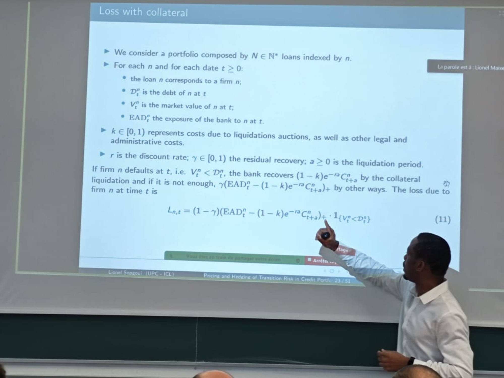

👋 About

I am Lionel Sopgoui, PhD student in Mathematical Finance, at LPSM of Université Paris Cité (in the Financial and Actuarial Mathematics, Numerical Probability team), Department of Mathematics of Imperial College London (in the Mathematical Finance team) and Risk division at BPCE S.A. (in model validation team). My thesis work revolves around Applications of Probability and Stochastic Control in Economic Modelling, Climate transition risk and Credit Risk. I am co-advised by Jean-François Chassagneux, Antoine (Jack) Jacquier and Smail Ibbou.
📄 Publications
2024
Lionel Sopgoui. “Impact of the carbon price on credit portfolio’s loss with stochastic collateral,” Working paper, 2024.
Lionel Sopgoui. “Modeling the impact of Climate transition on real estate prices,” arXiv:2408.02339, 2024.
2023
Géraldine Bouveret, Jean-François Chassagneux, Smail Ibbou, Antoine Jacquier, Lionel Sopgoui. “Propagation of a carbon price in a credit portfolio through macroeconomic factors,” SSRN=4518564 / arXiv:2307.12695, 2023.
2021
Lionel Sopgoui. “Les essais de Paukémil, l’intrus universel,” Books on demand, 2021.
🌍 Talks
2025
EconophysiX seminar, 8th April, “A top down and a bottom-up approaches for financial fragility under Climate Change,” Capital Fund Management, Paris, France.
UCLA - Financial and Actuarial Mathematics Seminar, 20th February, “Pricing and hedging of climate transition risk in Credit Portfolio,” UCLA, Online.
London-Oxford-Warwick Financial Mathematics Workshop, 9-10th January, “Modeling the impact of climate transition on real estate prices,” University of Oxford, Oxford, England.
2024
9th Green Finance Research Advances, 9-10th December, “Impact of Climate transition on Credit portfolio’s loss with stochastic collateral,” Auditorium - Banque de France, Paris, France.
Groupe de Travail - Risques Climatiques, 17th October, “Modeling the impact of climate transition on real estate prices,” CACIB, Montrouge, France.
12th Bachelier World Congress of the Bachelier Finance Society, 8-12th July, “Propagation of carbon taxes in credit portfolio through macroeconomic factors,” FGV EMAp, Rio de Janeiro, Brazil.
XXV Workshop on QUANTITATIVE FINANCE, April 11-13 2024, “Impact of Climate transition on Credit portfolio’s loss with stochastic collateral,” Università di Bologna, Bologna, Italy.
Séminaire Bachelier, 9th February, “Impact of climate transition on Loss Given Default with stochastic collaterals,” Institut Henri Poincaré, Paris, France.
2023
8th Green Finance Research Advances, 13-14th December, “Propagation of carbon taxes in credit portfolio through macroeconomic factors,” Auditorium - Banque de France, Paris, France.
European Summer School in Financial Mathematics, 04-08th September, “Propagation of carbon taxes in credit portfolio through macroeconomic factors,” Delft University of Technology, Delft, The Netherlands.
London/Oxford/Warwick Financial Mathematics Workshop, 12-13th July, “Diffusion of carbon price in credit portfolio through macroeconomic factors,” King’s College London, London, England.
Groupe de travail des thésards du LPSM, 30th May, “Propagation of carbon tax in credit portfolio through macroeconomic factors,” Sorbonne Université, Paris, France.
QUANTITATIVE FINANCE Workshop 2023, 20-22th March, “Diffusion of carbon price in credit portfolio through macroeconomic factors,” Università di Cassino, Gaeta, Italy.
2022
London-Paris Bachelier Workshop (6th edition), 15-16th September, “Diffusion of carbon price in a credit portfolio through macroeconomic factors,” Institut Henri Poincaré, Paris, France.
💡 Teaching
I worked as a teaching assistant on the following courses:
- Financial mathematics at ENSAE Paris: the first year of a master’s degree students in Introduction to financial derivatives, Valuation in the financial markets, Pricing by tree, Stochastic calculus, Black & Scholes model.
🎓 Education
PhD in Mathematical Finance
Université Paris Cité/Imperial College London
Advisors: Jean-François Chassagneux, Antoine (Jack) Jacquier and Smail Ibbou
Paris, France
September 2021 - August 2024
- Investigation of Bayesian optimisation for expensive-to-evaluate black-box functions.
- Application to computer simulators and physical experiments in engineering to find optimal active blowing strategies to maximise drag reduction.
M.S. in Financial Mathematics: Statistics and Finance
Ecole Polytechnique - ENSAE Paris
Palaiseau, France
September 2019 - December 2020
- Thesis: Machine Learning for Finance
- Courses: Interest rates models, Algorithmic trading, Derivatives, Advanced Machine Learning, Portfolio modelling, financial econometrics, GARCH and stochastic volatility models, Duration Models, etc.
Engineering Degree in Statistical Modelling and Applications
Telecom SudParis
Evry, France
September 2017 - December 2020
- Thesis: Machine Learning for Finance
- Courses: Probability, Statistic and data analysis, Optimization, Data mining, Stochastic process, Economic Modelling, Microwave, Data networks, Web architectures and applications, Humanities, etc.
BSc in Mathematics and Computer Science
National Advanced School of Engineering
Yaounde, Cameroon
September 2012 - July 2015
- Courses: Probability, Statistics, Electromagnetism, Mechanics, General, linear and multilinear algebra, Real and vector analysis, Numerical analysis, Electro-kinetics, Geometric and wave optics, Statics, Database, Object-oriented programming, etc.
🏆 Projects
Trading Algorithms on Stocks (via IBKR API) and on Cryptos (via Binance API) The aim here is to build statistical arbitrage strategies on different markets, implement them in Python, and apply them to Interactives Brokers.
Deep and Reinforcement Learning for Black-Scholes Options Pricing and Hedging Here, we have used the new Deep and Reinforcement learning tools to calculate the value of vanilla options and the associated hedging strategies.
Correlation between economic conditions and stock market profits (Python) Using simple statistical analyses (linear regression), we have tried to verify that stock markets (S&P500) are correlated with economic indicators (inflation, unemployment rate, interest rate).
Statistical inference analysis and the ML models on DAX and EURO STOXX Futures The aim here was to build trading strategies using machine learning to build trading strategies.
💾 Resume
🎳 Hobbies
Regular runner and tennis player.
Writer and philosopher.
Fan of 🏀basketball (Golden State Warriors), 🎾tennis (Novak Djokovic) and 🚴♀️cycling.
Traveler 🧳.